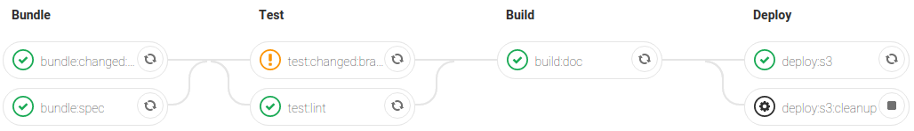

API üõ† for üòÑ & ü§ñ
Tools?! ü§ö Thanks, but no thanks...

Why? ü߆
- Keep the API design process simple & enjoyable
- Get all the possible value from OpenAPI specs (OAS)
- Ensure rest API common practice and quality
You need API specification anyway! ü§¶‚Äç‚ôÇÔ∏è
 we all did...
we all did...
API doc generated from code, don't need spec! üëä

 API doc in code is awkward üö®
API doc in code is awkward üö® Too much API code refactor ü§Ø
Too much API code refactor ü§ØAPI design first üöÄ
- You'll need a good editor
- Be sure to write good spec
- Deliver Mocks & Docs
OpenAPI editors ✍️
- Swagger editor quick & dirty online editor
- Openapi extension or
Swagger plugin or
 KaiZen editor
IDE integration
KaiZen editor
IDE integration - Stoplight studio advanced specification suite
Stoplight studio üéÖ
Start or migrate to OpenAPI üèÅ
You can start from scrath or migrate to openAPI Specification!
Swagger, RAML, Blueprint & Postman to OpenAPI
Well written specification üëå
Ask and learn from the best 


Lint speccyspectral lint openapi.yml in & 
Enforce common rules and standard practice
Detect changes openapi-diff & make changelog
Tools already in CI üë∑
Merge requests pipeline [
Tag pipeline 
include: oogit.oodrive.net/ci-templates/api-doc/open-api-run.yml
Documentation üìë
- Swagger UI quick & easy documentation
- OpenAPI viewer clean & simple try out
- Redoc clear advanced documentation + Postman
Redoc: API docs you can be proud of ü§©
Redoc, pro tips ü§ë
- Displays data types & formats
- Supports named examples
- Practical x-extension & plugins: tags, side-menu, code samples ...
- Futur version ©️ may add try out, already a pro feature
Nah, really... just use Postman ;)
Postman, plug & play üì®

Mock üå†
Fake auto-generated API allows you to
- Play with API from a simple spec file, even at the MR stage
- Start to implement client services & views upfront
- Collect feedbacks from customers / external partners
HTTP Mock server apisproutprism mock openapi.yml again
Prism üõÜ

Prism superpowers üîã
- Validate request payload & params, send 400 otherwise
- Validate servers (request passthrough)
- Magic query params
?__example=myStuff&__code=404&__server=prod - Generate realistic fake data using
x-faker(vendor extention)
POC with Portu, a CertEurope API üîë
Next ? ⏭️
- Auto deploy Mock servers?
- Add internal API docs & tryout on API management Gravitee!
- Continue to support teams adopting design first with OpenAPI...
- Stay tuned with Louis Lin ;)